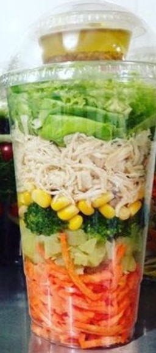
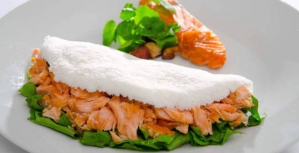
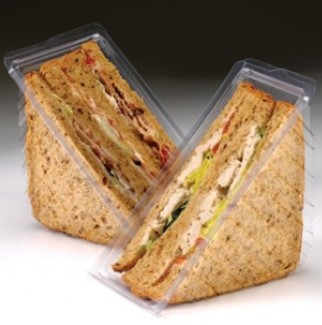
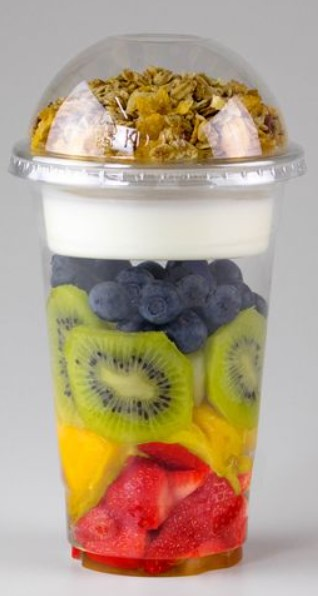
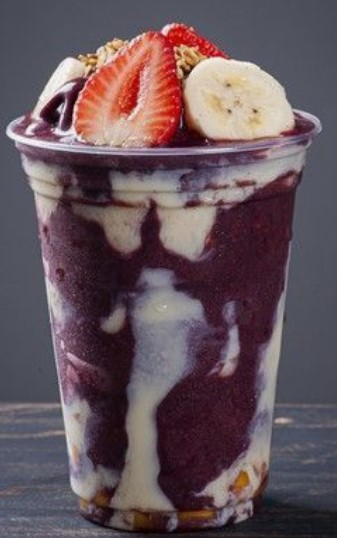
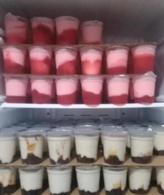
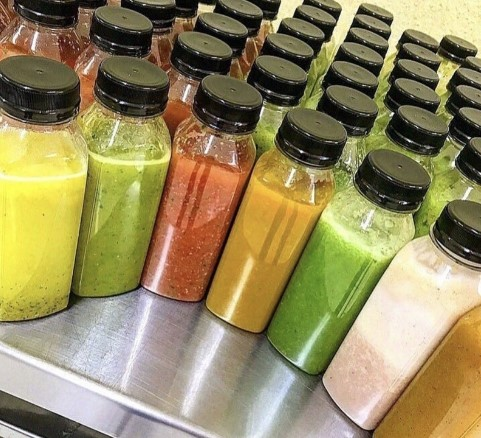

Top:Mix de batata doce e inglesa, filé de salmão,
salte de brócolis, cenoura e ervilha e salada de rúcula e cebola roxa.
Classic:Batata doce, filé de frango grelhado, salte
de brócolis, cenoura e ervilha e salada de agrião e cebola roxa.
Vegan:Batata doce e inglesa, salte de brócolis,
cenoura e ervilha e salada de rúcula, agrião e cebola roxa.
Salada de folhas

Mix:Cenoura ralada, batata inglesa e brócolis
picados, milho, frango desfiado e vagem. Acompanha tempero para salada
de azeite e vinagre de vinho branco.
Mix vegan:Cenoura fatiada, batata inglesa e abobrinha
picados, ervilha e quiabo. Acompanha tempero para salada de azeite e
vinagre de vinho branco.
Tapioca salgada

Top:Pedaços de salmão grelhado, cream cheese e couve
picados.
Classic:Frango em cubos grelhado, creme de milho e
quiabo picados.
Vegan:Batata inglesa em cubos, creme de abóbora e
cenoura ralada.
Lanche natural

Capricho:Pão de forma integral, maionese light,
frango desfiado, cenoura e beterraba ralados.
Tradicional:Pão de forma integral, maionese light,
fatias de peito de peru e queijo minas e azeitonas pretas picados.
Prático:Pão de forma integral, maionese light, alface
em pedaços, atum e cenoura ralados.
Salada de frutas

Frutas vermelhas:Amora, blueberry, framboesa,
morango, mel e amêndoa.
Frutas mix sabores:Morango, manga, kiwi, uva roxa sem
semente, iorgute grego e granola com castanhas.
Frutas mix:Morango, banana, kiwi, uva roxa sem
semente, suco de laranja e granola sem castanhas.
Açai

Açai completo:Açai, banana, morango, leite condesado,
leite em pó e granola.
Açai médio:Açai, morango, leite condesado e leite em
pó.
Açai básico:Açai, banana e granola.
Tapioca doce
Glamour:Banana, morango, chocolate 100% cacau e
avelã.
Fitness:Amora, morango, geleia de framboesa e
amêndoa.
Light:Banana e pasta de amendoim.
Iorgute

Encanto:Morango e calda de frutas vermelhas (amora,
blueberry e framboesa).
Tradicional:Coco e calda de ameixa.
Bebidas

Vitamina:Mamão, maçã, banana e laranja com leite
desnatado.